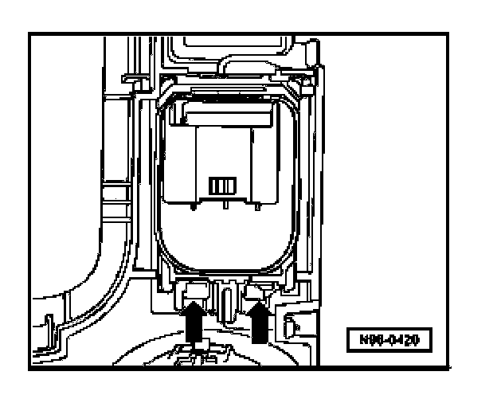

Power Mirror Switch: Service and Repair
Mirror Adjustment Switch -E43- With Mirror Selector Switch -E48-, Removing And Installing
Removing
- Switch off all electrical consumers, switch off ignition and remove ignition key.
- Remove selector lever cover

- Release locking lugs -arrows- and remove switch from cover.
Installing
Install in reverse order of removal.